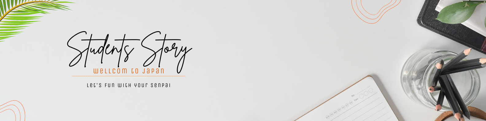
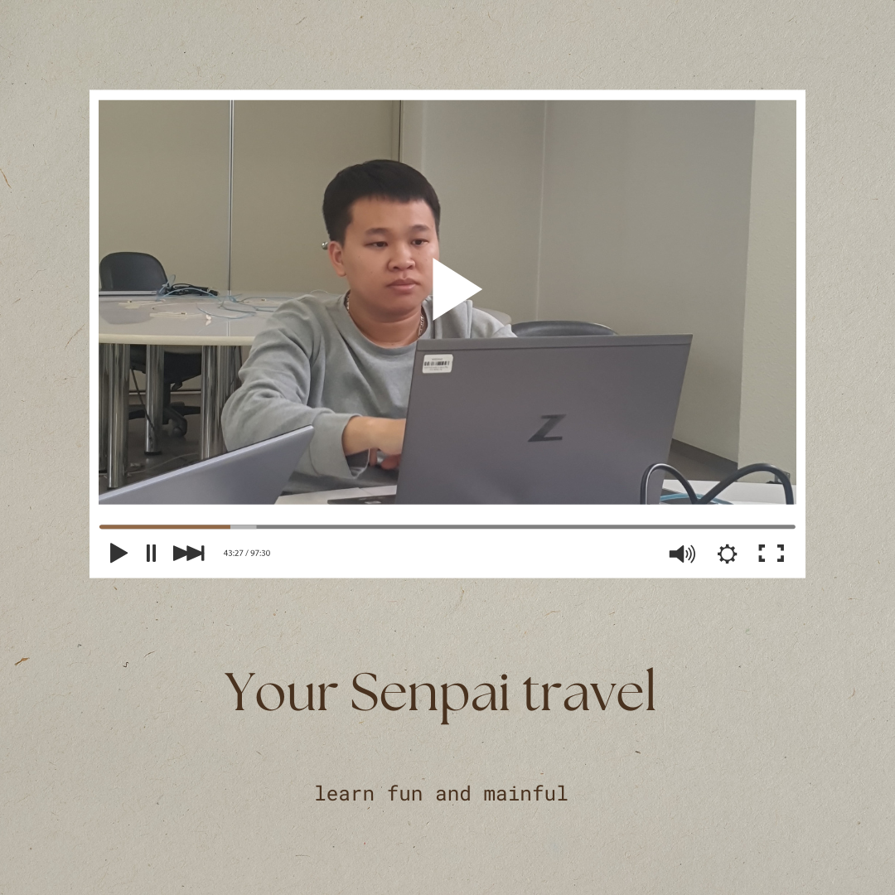
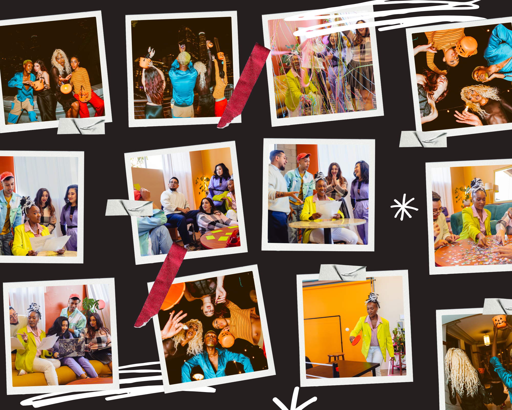
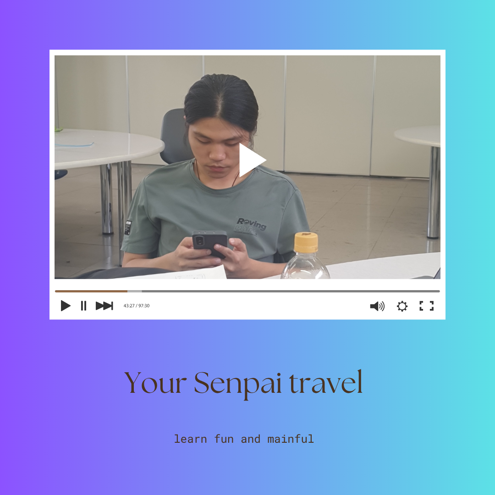

THA CHANTHUN
学びは、私たちが成長し、つながり、あらゆる瞬間に活力を得る力を与えてくれます。心を開き、自信を育み、生涯にわたる好奇心と喜びを呼び起こします。学びを通じて、新しい情熱を発見し、意味のある友情を築き、変化を受け入れることができます。学びは、困難をチャンスに変え、人生をより豊かに、より幸せに、より充実したものにしてくれます。
Lnaguage:


TRAN ANH NGOC KUN
学ぶことは、最も楽しくやりがいのある体験のひとつです。単に事実を暗記するだけでなく、アイデアを探求し、問題を解決し、世界の仕組みを発見することです。新しいことを学ぶと、脳が興奮し、達成感を得られます。新しい言語を習得したり、楽器をマスターしたり、科学的な概念を理解したりすることで、成長し適応する力が身につきます。学びは人生を面白くし、可能性に満ちたものにします。学びの楽しさは、好奇心と答えを見つける喜びから生まれます。芸術を試したり、手を使って何かを作ったりするような遊び心のある学びもあります。教室でアイデアを共有したり、プロジェクトで協力したりするような社会的な学びもあります。本、動画、ゲーム、オンラインコースなど、学びのツールは豊富で、いつでもどこでも学ぶことができます。学びは一生続く冒険で、決して飽きることはありません。新しいスキルや知識は自信を高め、新たなチャンスへの扉を開きます。喜びと熱意を持って学びに取り組むことで、幸せと成長の源になります。だから、好奇心を持って飛び込み、学びの旅を楽しみましょう。学ぶことは本当に楽しいのです。
SOPHEAP KUN
学びは、教科書や教室を超えた力強く喜びに満ちた体験です。人々をつなぎ、笑いを生み、永続的な友情を築きます。学校、ワークショップ、オンラインコミュニティなどで他者と学ぶことで、共通の好奇心と目標を通じてつながります。こうしたつながりは、相互の支えと励ましによって友情へと発展します。プロジェクトに取り組んだり、問題を解決したり、アイデアを話し合ったりすることは非常に楽しいものです。学びのプロセスに興奮をもたらし、学びを義務ではなく冒険のように感じさせます。新しいことに挑戦し、失敗を経験し、小さな成功を祝うことが、前向きで遊び心のある雰囲気を作ります。ダンスを学んだり、科学を試したり、新しい言語を探求したりすることで、発見の喜びが私たちを夢中にさせ、笑顔にします。知識を得るだけでなく、旅そのものを楽しむことが大切です。学びは私たちを幸せにし、自信を高め、目的を与え、成長を促します。新しいスキルや洞察は達成感をもたらし、新たな可能性への扉を開きます。学びは変化と向上が可能であることを思い出させてくれます。学ぶことで、私たちは生き生きとし、つながりを感じ、満たされます。ひとりでも仲間とでも、学びのプロセスを楽しみましょう。笑い、探求し、すべての一歩を祝福してください。学びは人生をより楽しく、より社交的に、そしてずっと幸せにしてくれます。


WANG YONG SHEN KUN
学ぶことは、最も楽しくやりがいのある体験のひとつです。単に事実を暗記するだけでなく、アイデアを探求し、問題を解決し、世界の仕組みを発見することです。新しいことを学ぶと、脳が興奮し、達成感を得られます。新しい言語を習得したり、楽器をマスターしたり、科学的な概念を理解したりすることで、成長し適応する力が身につきます。学びは人生を面白くし、可能性に満ちたものにします。学びの楽しさは、好奇心と答えを見つける喜びから生まれます。芸術を試したり、手を使って何かを作ったりするような遊び心のある学びもあります。教室でアイデアを共有したり、プロジェクトで協力したりするような社会的な学びもあります。本、動画、ゲーム、オンラインコースなど、学びのツールは豊富で、いつでもどこでも学ぶことができます。学びは一生続く冒険で、決して飽きることはありません。新しいスキルや知識は自信を高め、新たなチャンスへの扉を開きます。喜びと熱意を持って学びに取り組むことで、幸せと成長の源になります。だから、好奇心を持って飛び込み、学びの旅を楽しみましょう。学ぶことは本当に楽しいのです。

学びは、私たちが成長し、つながり、あらゆる瞬間に活力を得る力を与えてくれます。心を開き、自信を育み、生涯にわたる好奇心と喜びを呼び起こします。学びを通じて、新しい情熱を発見し、意味のある友情を築き、変化を受け入れることができます。学びは、困難をチャンスに変え、人生をより豊かに、より幸せに、より充実したものにしてくれます。